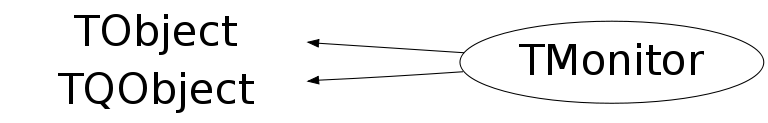

class TMonitor: public TObject, public TQObject
TMonitor This class monitors activity on a number of network sockets. The actual monitoring is done by TSystem::DispatchOneEvent(). Typical usage: create a TMonitor object. Register a number of TSocket objects and call TMonitor::Select(). Select() returns the socket object which has data waiting. TSocket objects can be added, removed, (temporary) enabled or disabled.
Function Members (Methods)
public:
| TMonitor(Bool_t mainloop = kTRUE) | |
| TMonitor(const TMonitor& m) | |
| virtual | ~TMonitor() |
| void | TObject::AbstractMethod(const char* method) const |
| virtual void | Activate(TSocket* sock) |
| virtual void | ActivateAll() |
| virtual void | Add(TSocket* sock, Int_t interest = kRead) |
| virtual void | TObject::AppendPad(Option_t* option = "") |
| static Bool_t | TQObject::AreAllSignalsBlocked() |
| Bool_t | TQObject::AreSignalsBlocked() const |
| static Bool_t | TQObject::BlockAllSignals(Bool_t b) |
| Bool_t | TQObject::BlockSignals(Bool_t b) |
| virtual void | TObject::Browse(TBrowser* b) |
| virtual void | TQObject::ChangedBy(const char* method)SIGNAL |
| static TClass* | Class() |
| virtual const char* | TObject::ClassName() const |
| virtual void | TObject::Clear(Option_t* = "") |
| virtual TObject* | TObject::Clone(const char* newname = "") const |
| void | TQObject::CollectClassSignalLists(TList& list, TClass* cls) |
| virtual Int_t | TObject::Compare(const TObject* obj) const |
| Bool_t | TQObject::Connect(const char* signal, const char* receiver_class, void* receiver, const char* slot) |
| static Bool_t | TQObject::Connect(TQObject* sender, const char* signal, const char* receiver_class, void* receiver, const char* slot) |
| static Bool_t | TQObject::Connect(const char* sender_class, const char* signal, const char* receiver_class, void* receiver, const char* slot) |
| virtual void | TQObject::Connected(const char*) |
| virtual void | TObject::Copy(TObject& object) const |
| virtual void | DeActivate(TSocket* sock) |
| virtual void | DeActivateAll() |
| virtual void | TObject::Delete(Option_t* option = "")MENU |
| virtual void | TQObject::Destroyed()SIGNAL |
| Bool_t | TQObject::Disconnect(const char* signal = 0, void* receiver = 0, const char* slot = 0) |
| static Bool_t | TQObject::Disconnect(TQObject* sender, const char* signal = 0, void* receiver = 0, const char* slot = 0) |
| static Bool_t | TQObject::Disconnect(const char* class_name, const char* signal, void* receiver = 0, const char* slot = 0) |
| virtual void | TQObject::Disconnected(const char*) |
| virtual Int_t | TObject::DistancetoPrimitive(Int_t px, Int_t py) |
| virtual void | TObject::Draw(Option_t* option = "") |
| virtual void | TObject::DrawClass() constMENU |
| virtual TObject* | TObject::DrawClone(Option_t* option = "") constMENU |
| virtual void | TObject::Dump() constMENU |
| void | TQObject::Emit(const char* signal) |
| void | TQObject::Emit(const char* signal, Long_t* paramArr) |
| void | TQObject::Emit(const char* signal, const char* params) |
| void | TQObject::Emit(const char* signal, Double_t param) |
| void | TQObject::Emit(const char* signal, Long_t param) |
| void | TQObject::Emit(const char* signal, Long64_t param) |
| void | TQObject::Emit(const char* signal, Bool_t param) |
| void | TQObject::Emit(const char* signal, Char_t param) |
| void | TQObject::Emit(const char* signal, UChar_t param) |
| void | TQObject::Emit(const char* signal, Short_t param) |
| void | TQObject::Emit(const char* signal, UShort_t param) |
| void | TQObject::Emit(const char* signal, Int_t param) |
| void | TQObject::Emit(const char* signal, UInt_t param) |
| void | TQObject::Emit(const char* signal, ULong_t param) |
| void | TQObject::Emit(const char* signal, ULong64_t param) |
| void | TQObject::Emit(const char* signal, Float_t param) |
| void | TQObject::EmitVA(const char* signal, Int_t nargs) |
| void | TQObject::EmitVA(const char* signal, Int_t nargs, va_list va) |
| virtual void | TObject::Error(const char* method, const char* msgfmt) const |
| virtual void | TObject::Execute(const char* method, const char* params, Int_t* error = 0) |
| virtual void | TObject::Execute(TMethod* method, TObjArray* params, Int_t* error = 0) |
| virtual void | TObject::ExecuteEvent(Int_t event, Int_t px, Int_t py) |
| virtual void | TObject::Fatal(const char* method, const char* msgfmt) const |
| virtual TObject* | TObject::FindObject(const char* name) const |
| virtual TObject* | TObject::FindObject(const TObject* obj) const |
| Int_t | GetActive(Long_t timeout = -1) const |
| Int_t | GetDeActive() const |
| virtual Option_t* | TObject::GetDrawOption() const |
| static Long_t | TObject::GetDtorOnly() |
| virtual const char* | TObject::GetIconName() const |
| TList* | GetListOfActives() const |
| TList* | TQObject::GetListOfClassSignals() const |
| TList* | TQObject::GetListOfConnections() const |
| TList* | GetListOfDeActives() const |
| TList* | TQObject::GetListOfSignals() const |
| virtual const char* | TObject::GetName() const |
| virtual char* | TObject::GetObjectInfo(Int_t px, Int_t py) const |
| static Bool_t | TObject::GetObjectStat() |
| virtual Option_t* | TObject::GetOption() const |
| virtual const char* | TObject::GetTitle() const |
| virtual UInt_t | TObject::GetUniqueID() const |
| virtual Bool_t | TObject::HandleTimer(TTimer* timer) |
| virtual Bool_t | TQObject::HasConnection(const char* signal_name) const |
| virtual ULong_t | TObject::Hash() const |
| virtual void | TQObject::HighPriority(const char* signal_name, const char* slot_name = 0) |
| virtual void | TObject::Info(const char* method, const char* msgfmt) const |
| virtual Bool_t | TObject::InheritsFrom(const char* classname) const |
| virtual Bool_t | TObject::InheritsFrom(const TClass* cl) const |
| virtual void | TObject::Inspect() constMENU |
| void | Interrupt() |
| void | TObject::InvertBit(UInt_t f) |
| virtual TClass* | IsA() const |
| Bool_t | IsActive(TSocket* s) const |
| virtual Bool_t | TObject::IsEqual(const TObject* obj) const |
| virtual Bool_t | TObject::IsFolder() const |
| Bool_t | TObject::IsOnHeap() const |
| virtual Bool_t | TObject::IsSortable() const |
| Bool_t | TObject::IsZombie() const |
| static void | TQObject::LoadRQ_OBJECT() |
| virtual void | TQObject::LowPriority(const char* signal_name, const char* slot_name = 0) |
| virtual void | TObject::ls(Option_t* option = "") const |
| void | TObject::MayNotUse(const char* method) const |
| virtual void | TQObject::Message(const char* msg)SIGNAL |
| virtual Bool_t | TObject::Notify() |
| virtual Int_t | TQObject::NumberOfConnections() const |
| virtual Int_t | TQObject::NumberOfSignals() const |
| void | TObject::Obsolete(const char* method, const char* asOfVers, const char* removedFromVers) const |
| static void | TObject::operator delete(void* ptr) |
| static void | TObject::operator delete(void* ptr, void* vp) |
| static void | TObject::operator delete[](void* ptr) |
| static void | TObject::operator delete[](void* ptr, void* vp) |
| void* | TObject::operator new(size_t sz) |
| void* | TObject::operator new(size_t sz, void* vp) |
| void* | TObject::operator new[](size_t sz) |
| void* | TObject::operator new[](size_t sz, void* vp) |
| TObject& | TObject::operator=(const TObject& rhs) |
| virtual void | TObject::Paint(Option_t* option = "") |
| virtual void | TObject::Pop() |
| virtual void | TObject::Print(Option_t* option = "") const |
| virtual Int_t | TObject::Read(const char* name) |
| virtual void | Ready(TSocket* sock)SIGNAL |
| virtual void | TObject::RecursiveRemove(TObject* obj) |
| virtual void | Remove(TSocket* sock) |
| virtual void | RemoveAll() |
| void | TObject::ResetBit(UInt_t f) |
| void | ResetInterrupt() |
| virtual void | TObject::SaveAs(const char* filename = "", Option_t* option = "") constMENU |
| virtual void | TObject::SavePrimitive(ostream& out, Option_t* option = "") |
| TSocket* | Select() |
| TSocket* | Select(Long_t timeout) |
| Int_t | Select(TList* rdready, TList* wrready, Long_t timeout) |
| void | TObject::SetBit(UInt_t f) |
| void | TObject::SetBit(UInt_t f, Bool_t set) |
| virtual void | TObject::SetDrawOption(Option_t* option = "")MENU |
| static void | TObject::SetDtorOnly(void* obj) |
| virtual void | SetInterest(TSocket* sock, Int_t interest = kRead) |
| static void | TObject::SetObjectStat(Bool_t stat) |
| virtual void | TObject::SetUniqueID(UInt_t uid) |
| virtual void | ShowMembers(TMemberInspector& insp) |
| virtual void | Streamer(TBuffer& b) |
| void | StreamerNVirtual(TBuffer& b) |
| virtual void | TObject::SysError(const char* method, const char* msgfmt) const |
| Bool_t | TObject::TestBit(UInt_t f) const |
| Int_t | TObject::TestBits(UInt_t f) const |
| virtual void | TObject::UseCurrentStyle() |
| virtual void | TObject::Warning(const char* method, const char* msgfmt) const |
| virtual Int_t | TObject::Write(const char* name = 0, Int_t option = 0, Int_t bufsize = 0) |
| virtual Int_t | TObject::Write(const char* name = 0, Int_t option = 0, Int_t bufsize = 0) const |
protected:
| static Int_t | TQObject::CheckConnectArgs(TQObject* sender, TClass* sender_class, const char* signal, TClass* receiver_class, const char* slot) |
| static Bool_t | TQObject::ConnectToClass(TQObject* sender, const char* signal, TClass* receiver_class, void* receiver, const char* slot) |
| static Bool_t | TQObject::ConnectToClass(const char* sender_class, const char* signal, TClass* receiver_class, void* receiver, const char* slot) |
| virtual void | TObject::DoError(int level, const char* location, const char* fmt, va_list va) const |
| virtual const char* | TQObject::GetSenderClassName() const |
| void | TObject::MakeZombie() |
Data Members
public:
| enum EInterest { | kRead | |
| kWrite | ||
| }; | ||
| enum TObject::EStatusBits { | kCanDelete | |
| kMustCleanup | ||
| kObjInCanvas | ||
| kIsReferenced | ||
| kHasUUID | ||
| kCannotPick | ||
| kNoContextMenu | ||
| kInvalidObject | ||
| }; | ||
| enum TObject::[unnamed] { | kIsOnHeap | |
| kNotDeleted | ||
| kZombie | ||
| kBitMask | ||
| kSingleKey | ||
| kOverwrite | ||
| kWriteDelete | ||
| }; |
protected:
| TList* | TQObject::fListOfConnections | ! list of connections to this object |
| TList* | TQObject::fListOfSignals | ! list of signals from this object |
| Bool_t | TQObject::fSignalsBlocked | ! flag used for suppression of signals |
| static Bool_t | TQObject::fgAllSignalsBlocked | flag used for suppression of all signals |
Class Charts
{kind=link}
{kind=link}
{kind=link}
{kind=link}

Function documentation
TMonitor(Bool_t mainloop = kTRUE)
Create a monitor object. If mainloop is true the monitoring will be done in the main event loop.
void SetInterest(TSocket* sock, Int_t interest = kRead)
Set interest mask for socket sock to interest. If the socket is not in the active list move it or add it there. If interest=kRead then we want to monitor the socket for read readiness, if interest=kWrite then we monitor the socket for write readiness, if interest=kRead|kWrite then we monitor both read and write readiness.
TSocket * Select()
Return pointer to socket for which an event is waiting. Select can be interrupt by a call to Interrupt() (e.g. connected with a Ctrl-C handler); a call to ResetInterrupt() before Select() is advisable in such a case. Return 0 in case of error.
TSocket * Select(Long_t timeout)
Return pointer to socket for which an event is waiting. Wait a maximum of timeout milliseconds. If return is due to timeout it returns (TSocket *)-1. Select() can be interrupt by a call to Interrupt() (e.g. connected with a Ctrl-C handler); a call to ResetInterrupt() before Select() is advisable in such a case. Return 0 in case of any other error situation.
Int_t Select(TList* rdready, TList* wrready, Long_t timeout)
Return numbers of sockets that are ready for reading or writing. Wait a maximum of timeout milliseconds. Return 0 if timed-out. Return < 0 in case of error. If rdready and/or wrready are not 0, the lists of sockets with something to read and/or write are also returned.
Int_t GetActive(Long_t timeout = -1) const
Return number of sockets in the active list. If timeout > 0, remove from the list those sockets which did not have any activity since timeout millisecs. If timeout = 0, then reset activity timestamp on all active sockets. This time out is typically used if GetActive() is used to see how many remotes still need to send something. If they pass the timeout they will be skipped and GetActive() will return 0 and the loop can be exited.
Bool_t IsActive(TSocket* s) const
Check if socket 's' is in the active list. Avoids the duplication of active list via TMonitor::GetListOfActives().
TList * GetListOfActives() const
Returns a list with all active sockets. This list must be deleted by the user. DO NOT call Delete() on this list as it will delete the sockets that are still being used by the monitor.
TList * GetListOfDeActives() const
Returns a list with all de-active sockets. This list must be deleted by the user. DO NOT call Delete() on this list as it will delete the sockets that are still being used by the monitor.